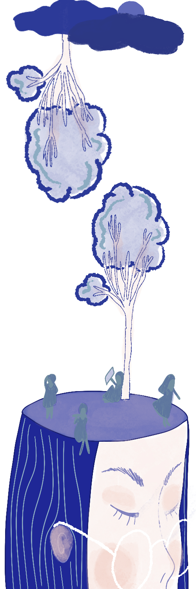

Pour être très honnête, je ne savais pas du tout au début. On a passé toute une année ensemble l’année dernière dans la même classe, je ne savais pas. Je t’ai juste vue quelquefois avec des béquilles, d’autres fois sans béquilles, des choses comme ça, mais je me disais : « Elle a sûrement un problème de cheville », tu vois, un truc comme ça. Je ne me suis vraiment pas posé la question du trouble, et en général, ça ne se voit pas tant. Après, j’ai fait plus attention cette année. Je me disais : « Oh ok, je vois ce petit changement » et tout ça, mais ce n’était pas énorme. Des fois, je me disais : « Ok, ça se trouve, c’est quelqu’un d’autre, j’aimerais bien lui parler », tu vois, mais ce n’était pas frappant si on ne faisait pas vraiment attention. Je suis un peu comme le prof, tu vois, mais je pense que c’est le cadre aussi.
Je pense que je pourrais vivre avec quelqu’un qui en est atteint, parce que t’aimes la personne, donc c’est la personne, on va dire, je dirais, « racine » que j’aimerais avant tout. Je ne connais pas assez le sujet pour m’avancer, tu vois, donc si ça se trouve, je n’aurais pas la force ou je ne serais pas capable de le faire bien, mais je ferais de mon mieux. À partir du moment où tu aimes la personne, j’apprendrais à gérer ça avec elle, à essayer de trouver des solutions.
Tu m’avais parlé d’une application sur téléphone, tu vois, pour savoir qui est là, ou qu’est-ce que t’as fait dans ta journée, etc. Je trouve ça vraiment super ! Développer ce genre d’outils, en fait, tout simplement pour améliorer la situation et les relations pour toi et avec les autres, c’est chouette. Évidemment, je parle comme ça, mais je ne connais pas la sensation, tu vois, mais voilà. Dans une école comme celle-ci, il y a beaucoup de gens plus sensibles aux choses, même hypersensibles. Ce n’est pas un trouble psy en soi, mais ça peut aussi devenir un handicap des fois. Après, je sais que personnellement, j’étais entourée de pas mal de personnes dans cette situation, moi-même aussi, mais beaucoup moins. Tu vois, je connais des personnes hypersensibles qui faisaient beaucoup de crises d’angoisse, des choses comme ça. Et je dirais que, autant dans ces situations que dans la tienne, qui est différente quand même, c’est beaucoup de communication avec la personne. « Comment tu ressens ça ? », « Comment tu vis ça et comment tu veux que je t’aide ? », « Est-ce que tu veux plus du réconfort ou une aide rationnelle ? », « Est-ce que je peux dire ça ou ça ? » etc. J’ai instauré ça avec mes amis, et ça marche super bien, c’est trop cool. La communication, l’écoute. Parce que les gens, des fois, ils ont juste besoin de se lâcher, ou alors de se retrancher sur eux-mêmes, et il faut respecter ça. Et même si je ne le vois pas vraiment pour toi, je respecte ça.
